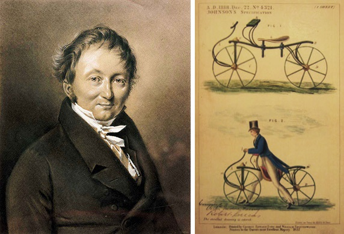
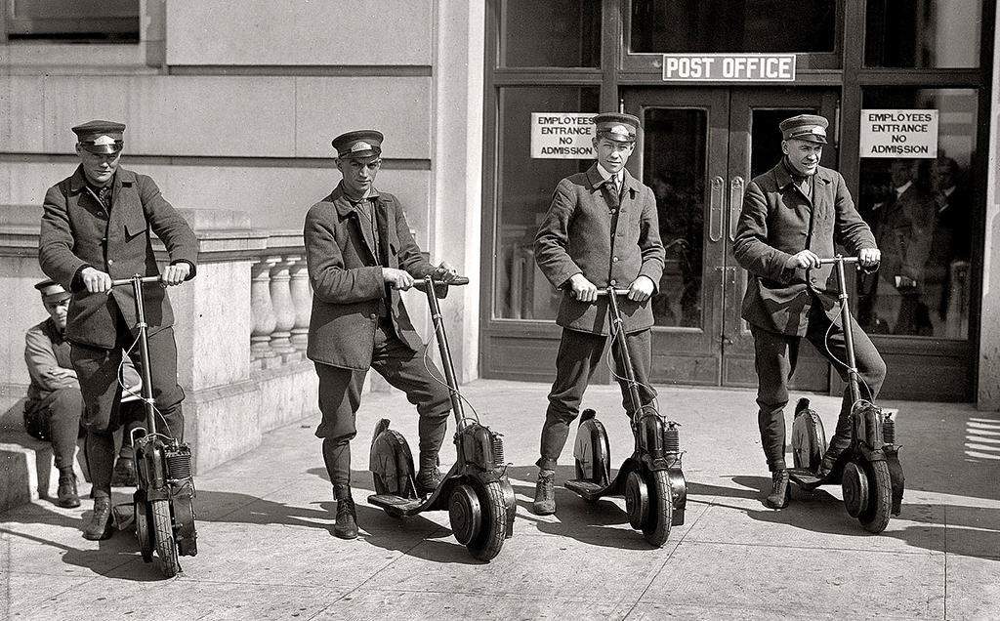
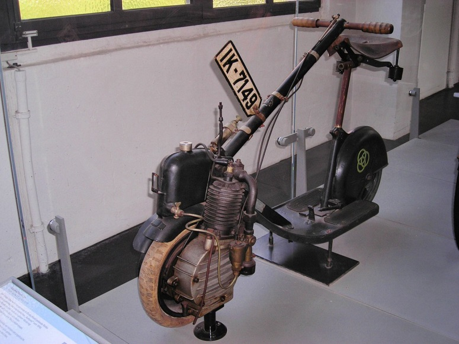
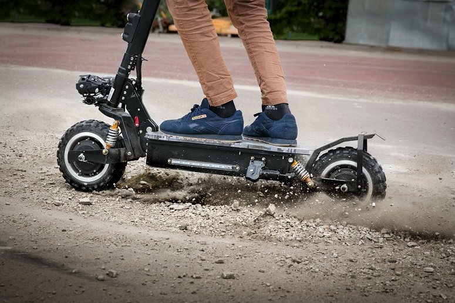

Кто изобрел электросамокат?

Официально история создания самоката ведёт свой отсчет с момента изобретения своеобразной «машины для ходьбы». Именно он создал полноценную конструкцию, так хорошо знакомую всем нам: рама из дерева, два колеса и, что главное, руль с подвижным передним колесиком.
Изобретатель не просто придумал и создал новое устройство, он начал очень активно его продвигать. Настолько активно, что совсем скоро его «дрезины» приобрели колоссальную популярность – на них катались и во Франции, и в США, и в Великобритании. Особенно полюбили новый девайс дети и… почтальоны – самокаты сделали их работу не только быстрее, но и намного веселее.
Получив популярность, самокат начал быстро эволюционировать. Не меняя концепцию, мастера разных стран экспериментировали с материалами и конструкцией узлов. К примеру, в Англии они впервые стали металлическими, а удобное сиденье на деке – заслуга немецких изобретателей.
Путь к электродвигателю

Кто точно изобрел электросамокат, сказать сложно. Однако, известно, что первый патент на подобную машину был выдан 19 сентября 1895 года. Его получил американский изобретатель Огден Болтон: мастер предложил конструкцию с электродвигателем, который располагался на ступице задних колес, и десятивольтовой батареей. Однако, нет никакой информации, что модель Болтона была хоть где-то выпущена. Первый в мире электросамокат был изготовлен позже, компанией Ajax Motor в начале 1900-х, но популярности особой не получил.
В те времена электричество ещё не стало основной движущей силой прогресса, и балом правили двигатели внутреннего сгорания. Самокаты двадцатого века приводились в движение небольшими ДВС, примерно на полторы лошадиных силы – они были громоздкими, некрасивыми, но всё равно нашли своего пользователя.
Инженеры понимали, что главный недостаток их изобретений – это вес и габариты, поэтому всеми силами старались хоть как-то сделать моторные самокаты удобнее. Началось всё со складного руля, который очень сильно облегчил конструкцию и серьёзно помог продвижению скутеров в народ.
Почтальоны, светские львицы, голливудские звезды и просто активная молодежь – люди начали с энтузиазмом осваивать новый вариант самоката.
Но это всё про самокаты на ДВС, а что с электричеством? Вторая волна интереса к электроскутерам поднялась после Второй Мировой войны: тотальный дефицит топлива требовал принимать экстренные меры. И эти меры были приняты.
Переход к современным электросамокатам

Главным недостатком скутеров на электродвигателе была нехватка энергии. В 60-е годы Union Carbide создаёт щелочной топливный элемент, и это решает проблему. В то же время на дорогах начинает появляться все больше гибридных моделей, развивавших скорость 25 км/ч. В 1974 году компания Auranthic Corp. выпустила электроскутер Charger – он работал на подзаряжаемой батарее, и при полной зарядке разгонялся аж до 50 миль/час.
После этого многие небольшие компании пытались выпустить на рынок городские электросамокаты, но особого ажиотажа они не вызывали – до тех пор, пока в 1996 году не был изготовлен Puegeot Scoot'Elec, который стал настоящей бомбой. Его никель-кадмиевая батарея прекрасно держала заряд и позволяла разгоняться до 25 миль/час, кроме того, модель отличалась стильным дизайном.
С того момента популярность электросамокатов начала непрерывно расти. Резкий скачок популярности вызвало изобретение литий-ионных аккумуляторов, который были намного эффективнее предыдущих вариантов. Именно они и используются в современных моделях.

Вот так электросамокат проделал свой путь через года, постепенно превращаясь из деревянной тряской конструкции в стильный и удобный «транспорт последней мили», лёгкий, экономичный и красивый.